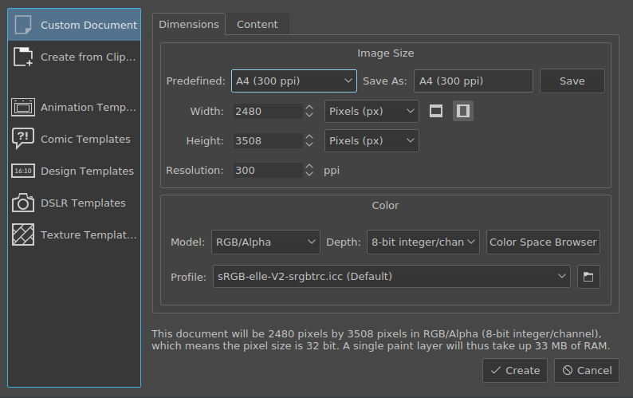
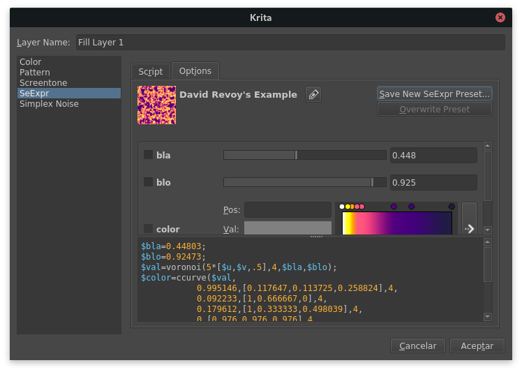
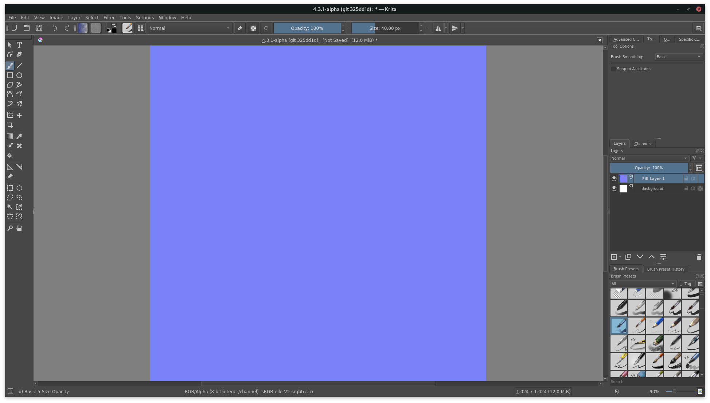
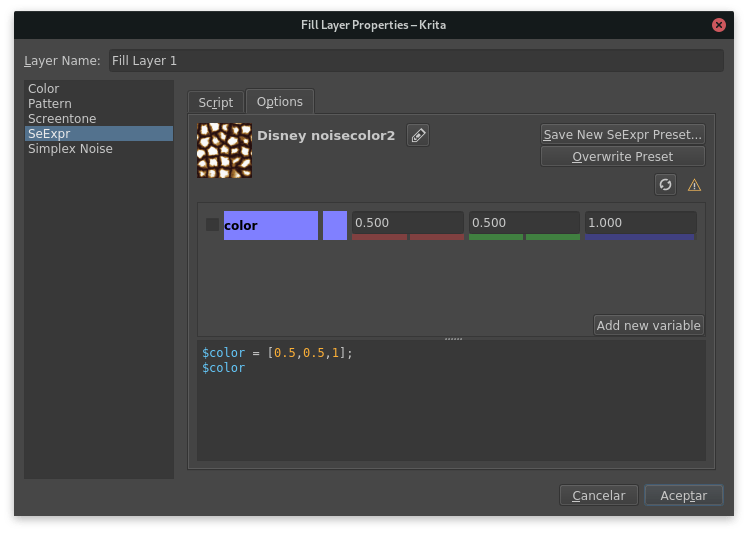
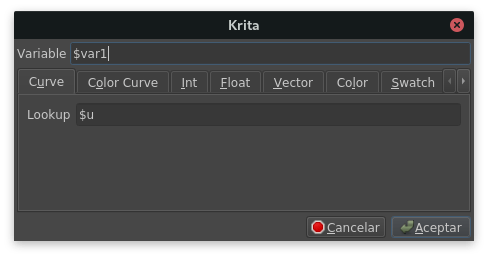
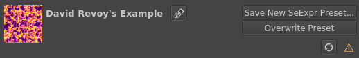
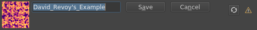

SeExpr 介紹¶
在 4.4 版本新加入: This document will introduce you to the SeExpr expression language.
什麼是 SeExpr ?¶
SeExpr is an embeddable expression language, designed by Disney Animation, that allows host applications to render dynamically generated content. Pixar calls it in its documentation a "scriptable pattern generator and combiner".
SeExpr is available within Krita as a Fill Layer.
SeExpr 的背景¶
To understand what SeExpr is about, we need to differentiate between two types of graphics, raster and procedural.
The vast majority of the computer-generated stuff you see every day belong to the first type-- images like photos, your favorite anime screenshots, memes, are all a multitude of tiny little dots of color, or pixels, arranged into a grid.
Raster graphics have two drawbacks. First, once you create them, their resolution is fixed. You cannot zoom in and magically get any more detail. And if you need to change them, either you go back to the source and sample it again (which is sometimes impossible), or edit it with a raster graphics program, like Krita.
One of the biggest problems, however, is that we are always limited by the space our programs can use; either secondary storage, like SD cards, or RAM. Unless compressed, image memory needs are quadratic in the size of the image. For a quick example, the 建立新文件 dialog of Krita tells you three bits of information: its size in pixels, the size of the pixel itself, and the total memory needed.
Here's a summary for square textures. Note that the memory needed is for one layer only:
Size |
Memory needed |
|---|---|
256 |
256 KB |
512 |
1 MB |
1024 |
4 MB |
2048 |
16 MB |
4096 |
64 MB |
An alternative is to use 向量圖形. Vector graphics, for instance SVGs, employ mathematic formulae like splines and Bézier curves to describe a shape. As they are mathematically defined, they can be resized to suit your needs without losing resolution.
SeExpr belongs to a different class, procedural graphics. Similar to vector graphics, procedural graphics only need a few KBs of secondary storage for their definition. But they are not defined by mathematical formulae; you actually code how the color is calculated at each point of the texture. And, because it is not limited in its precision, you can render complex patterns in your layers at completely arbitrary resolution.
編寫程式腳本¶
In this tutorial, we'll show you how to write a script in SeExpr, render it to a layer, and then save it as a preset.
We'll start by going to the 圖層, and adding a new Fill Layer. Then select the SeExpr generator from the list. You'll be greeted by this window:

The SeExpr generator dialog is divided into two tabs. For now, we'll stay on Options.
備註
填充圖層 describes these tabs in more detail.
Let's start by painting a layer in light blue.
First, SeExpr scripts must define an output variable, let's call it $color.
As SeExpr thinks of colors in the RGB color space,
color variables are defined by a triplet of numbers known as a vector.
We'll start by defining the $color variable and giving it a value.
Go to the text box, and clear it if it has any text.
Then, define and set $color to something like [0.5, 0.5, 1]
(half lit red, half lit green, fully lit blue):
$color = [0.5, 0.5, 1];
SeExpr needs to know which variable holds the final color value. This is done by writing at the end, on its own line, the name of the variable:
$color
The script should now look like this:
$color = [0.5, 0.5, 1];
$color
Click OK, and you'll render your first script!

警告
To be absolutely precise, SeExpr has no color management. It always renders textures as 32-bit float, gamma corrected, sRGB images. Krita transforms them into your document's color space using the sRGB-elle-V2-srgbtrc.icc profile.
See 色彩管理作業流程 for what this means.
使用小工具管理程式腳本¶
There is also another way to define and edit your variables. Open the fill layer's properties by right-clicking on Fill Layer 1, and selecting Layer Properties....
Notice the middle box? Once it detects a syntactically correct script,
SeExpr enables a whole chunk of knobs to manage individual variables.
In our example above, you can change $color's in three ways:
enter the red, green, or blue channel's value in the input fields
move the little colored sliders to change the respective channel
click on the preview square to the left of the boxes, to select a completely new color.
The last button on the middle box is always Add new variable. Click it and this dialog will open:
This dialog shows you all the types of variables that SeExpr accepts:
- Curve and Color curve¶
They are the SeExpr version of Stop Gradients: they interpolate a ramp given by a set of values.
Curves represent 1D gradients, returning a single float at each evaluation point.
Color curves represent RGB gradients, returning a Color at each point.
- Integers and Floats¶
Numbers.
- Vector¶
A triplet of floats.
- Color¶
A vector representing an RGB color.
- Swatch¶
A list of Colors.
- String¶
Usually single words.
For instance, you could replicate $color in the Vector tab:
創建第一個預設¶
Once your script is ready, you can reuse it by making a preset.
You can create one through the top bar of the Options tab:
Select Save New SeExpr Preset... and the following dialog will open:

You can edit the name of the preset in the top line edit box, and set a thumbnail for easy identification.
提示
The dialog will append "Copy" to the preset's name if it is a copy of an existing one. You can change it at will.
The dialog provides the following choices for setting a thumbnail:
- Load Existing Thumbnail¶
If the preset already has a thumbnail (for instance, if you created it from an existing preset), this button will load and apply it.
- Load Image¶
Applies an image from the filesystem as a thumbnail.
- Render Script to Thumbnail¶
Renders your script to a 256x256 texture, and applies the latter as a thumbnail.
- Clear Thumbnail¶
Deletes the thumbnail. Note that, if the preset is a copy of an existing one, this can be reverted by clicking Load Existing Thumbnail.
更改現有預設¶
If you change a preset's script, you will notice two new buttons in the top bar of the Options tab:

The reload button will restore the preset to its original properties, while clicking on Overwrite Preset will save your changes.
Additionally, you can edit the preset's name by clicking on the rename button, entering the new name, and clicking on Save:

綁定你的預設¶
Sharing your scripts is easy! SeExpr script presets are just like any other resource in Krita. Follow the instructions in 資源管理 to create your own bundles.